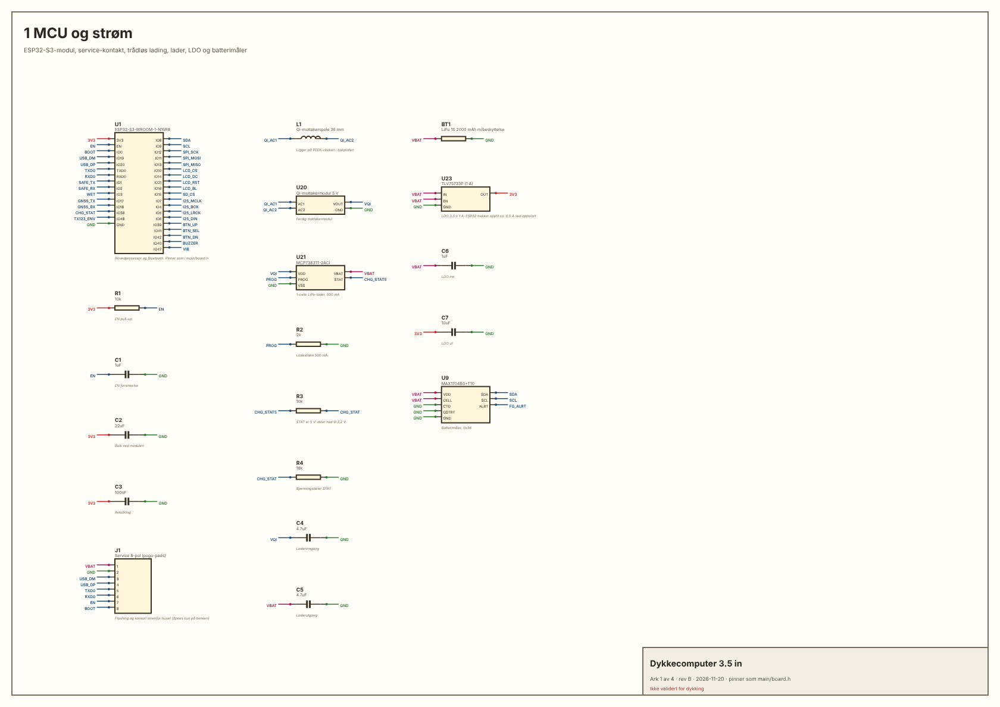
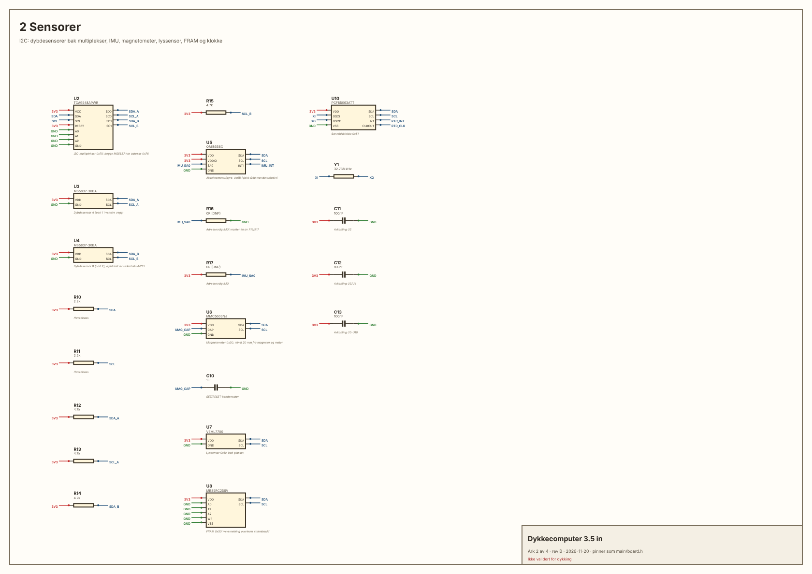
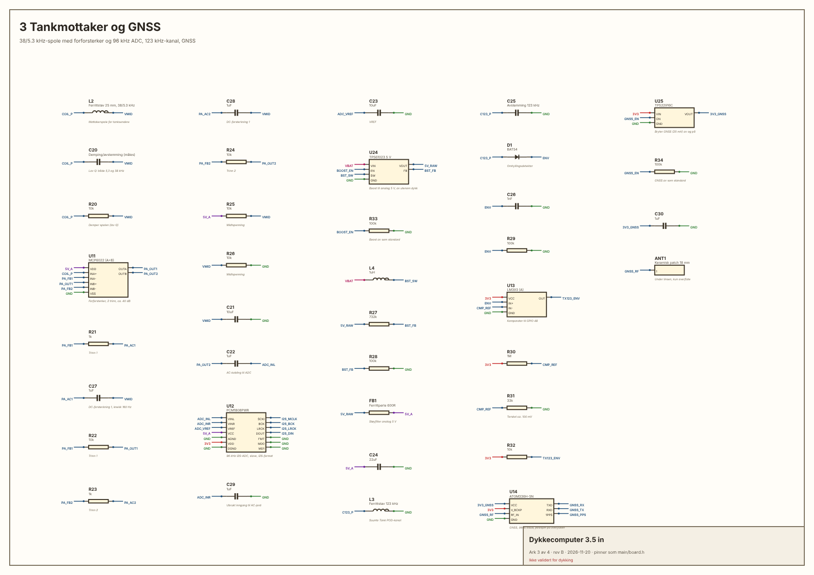

Prosjektlogg
Alt som er gjort så langt, med utregninger og koblingsskjema. Sist oppdatert 20.11.2026. Alle tall er teori og anslag fra datablader: ingenting her er målt på maskinvare ennå.
Ikke til ekte dykking. Huset er ikke trykktestet, kretsen er ikke bygget, og koblingsskjemaet er ikke gjennomgått av en annen person.
- Tidslinje
- Huset: utregninger
- Plast i stedet for aluminium
- Radio og magnetfelt gjennom huset
- Kontroll av kretsene
- Strømbudsjett og batteritid
- Koblingsskjema rev B
- Dette gjenstår
Tidslinje
| Dato | Hva | Resultat |
|---|---|---|
| 20.11.2026 | Gjennomgang av alle kretser, plan for montering, tynnere hus og plasthus | Koblingsskjema rev B med 12 rettelser; funn om radio gjennom aluminium |
| 20.11.2026 | Fusion-prosjekt på TorHub | 37 deler, ekte komponentmodeller, sammenstilling med ledd, kollisjonssjekk og masse |
| 20.11.2026 | Koblingsskjema rev A | 4 ark, 97 komponenter, 81 nett, åpnet som elektronikkdesign i Fusion |
| 15.11.2026 | 3D-modeller av huset | Fire varianter i STEP, dimensjonert for 100 m, kollisjonssjekket |
| 13.11.2026 | Demoen publisert under Diverse | Simulator, mobilapp og kildekode i nettleseren |
| Før 13.11.2026 | Fastvare, deko og simulator | 191 enhetstester, deko innen 1 min av decotengu på 54 dykk, 400 000 tilfeldige protokollforespørsler uten feil |
Huset: utregninger (3,5", aluminium)
Plater er regnet som fritt opplagte (Roark), med prøvetrykk 1,5 × 100 m. Tillatt spenning: herdet glass 45 MPa, aluminium 6061-T6 184 MPa, PEEK 35 MPa.
| Del | Formel | Inndata | Resultat | Vurdering |
|---|---|---|---|---|
| Prøvetrykk | p = 1,5 · ρ g h | 100 m sjøvann, faktor 1,5 | 1,51 MPa | OK |
| Linse, herdet glass | σ = β p b² / t² | Vindu 52 × 78 mm, β = 0,485, t = 7,0 mm | σ = 40 MPa (tillatt 45) | OK |
| Linsekant (utkraget) | σ = 6 q a / t² | q = p · 52/2 = 39 N/mm, a = 6 mm, t = 3,0 mm | σ = 157 MPa (tillatt 184) | OK |
| Bakplate, aluminium | σ = β p b² / t² | Spenn 61 × 89 mm, β = 0,472, t = 5,0 mm | σ = 106 MPa (tillatt 184); 3,8 mm ville holdt | OK |
| Ladevindu, PEEK Ø 40 | σ = 3(3+ν)/8 · p r² / t² | ν = 0,38, t = 5,0 mm | σ = 31 MPa (tillatt 35) | OK |
| O-ring bakplate | klem = (d − h)/d; fyll = Asnor/Aspor | Snor 1,5 mm, spor 2,0 × 1,1 mm | Klem 27 % (15–30 %), fyll 80 % (under 85 %) | OK; vurder spor 2,2 mm (fyll 73 %) |
| Bakplateskruer | F = p · A | A innenfor O-ringen 65,4 × 93,4 mm | Trykket gir 9,2 kN, men presser platen mot rammen; skruene bærer bare O-ringen, ca. 50 N hver mot ca. 900 N for M2 A4-70 | OK |
| Oppdrift | B = ρ V g | Ytre volum ca. 0,25 L, masse 487 g | Ca. 230 g negativ i sjøvann | OK |
| Rammen | FEA | Ikke regnet | Åpen | |
| Hele huset | Trykktest 1,5 × 100 m, 30 min, 3 ganger | Ikke gjort | Åpen |
Høyden lag for lag
| Lag | mm |
|---|---|
| Bakplate med PEEK-vindu | 5,0 |
| Qi-spole, ferritt og luft | 1,1 |
| Batteri | 6,0 |
| Luft | 0,2 |
| Kretskort | 1,0 |
| Komponentsone (ESP32 er 3,1) | 3,2 |
| Skjerm | 2,5 |
| Luft | 0,2 |
| Linsekant | 3,0 |
| Linse | 7,0 |
| Bezel | 1,5 |
| Sum | 30,7 |
Tynnere: høye komponenter på undersiden ved et 50 × 60 mm batteri (−2,0 mm) og 0,8 mm kort (−0,2) gir 28,5 mm. Med 5 mm batteri: 27,5 mm. Med safirlinse 4,5 mm: 25,0 mm.
Plast i stedet for aluminium
Et helt plasthus blir for tykt ved 100 m, fordi linsekanten og bakplaten er plater i bøying. Anbefalingen er et hybridhus: toppring og bakplate i aluminium, midtring i frest POM-C. Da slipper radiosignalene gjennom sidene, og huset blir rundt 31 mm.
| Materiale | Tillatt σ (MPa, anslag) | Vegg (mm) | Linsekant (mm) | Flat bakplate (mm) |
|---|---|---|---|---|
| Aluminium 6061-T6, frest | 184 | 2,0 (min.) | 2,8 | 3,8 |
| PEEK, frest | 35 | 2,0 | 6,4 | 8,7 |
| POM-C, frest | 20 | 2,4 | 8,4 | 11,5 |
| SLA-resin (Tough 2000) | 15 | 2,8 | 9,7 | 13,3 |
| MJF PA12, dampglattet | 15 | 2,8 | 9,7 | 13,3 |
| Vakuumstøpt polyuretan | 12 | 3,1 | 10,8 | 14,9 |
| FDM PA-CF | 12 | 3,1 | 10,8 | 14,9 |
| FDM PETG | 8 | 3,8 | 13,3 | 18,2 |
Tillatt spenning er cirka strekkfasthet / 3, for printet plast i svakeste retning. Printet prototype (SLA eller MJF PA12) holder til bassengtest ned til 10 m med 4,2 mm bakplate. Printede deler trenger dampglatting eller vakuumimpregnering, gjengeinnsatser i messing, slipte O-ringflater og trykktest av hver del. Vakuumstøping i silikonform lønner seg først fra 5–20 hus.
Radio og magnetfelt gjennom huset
Et lukket aluminiumshus stopper tanksignalet, Bluetooth og GPS. Bare linsen og ladevinduet slipper gjennom, og skjermen dekker nesten hele linsen.
| Signal | Frekvens | Skinndybde i Al 6061 | Demping, 3,5 mm vegg |
|---|---|---|---|
| Eldre tanksender | 5,3 kHz | 1,38 mm | ca. 22 dB |
| Pelagic-sender | 38 kHz | 0,52 mm | ca. 59 dB |
| Suunto Tank POD | 123 kHz | 0,29 mm | over 100 dB |
| Bluetooth, GPS | 1,6–2,4 GHz | under 0,002 mm | stoppet |
Dempingen er et grovt anslag (plan bølge gjennom plate) og må måles. Løsninger: midtring i plast (anbefalt), eller et eget PEEK-vindu under mottakerspolen og ESP32-WROOM-1U med ekstern antenne. GPS-modulen kan fjernes; appen bruker allerede telefonens posisjon.
Kontroll av kretsene
Hver del av koblingsskjemaet er regnet gjennom. Elleve feil eller svakheter ble rettet i rev B. Tre punkter må måles, og to er fortsatt åpne.
| Kontroll | Utregning | Resultat | Status |
|---|---|---|---|
| GPIO-bruk | 33 brukbare pinner; 35–37 tas av PSRAM, 45/46 er oppstartspinner | Alle andre pinner er i bruk. Nye funksjoner må på I2C eller sikkerhets-MCU-en | OK |
| Oppstartspinner | IO0 med pull-up og testpunkt; IO3 (våtkontakt) er JTAG-strap, uskadelig uten eFuse-valg | Starter normalt | OK |
| I2C-adresser, hovedbuss | 0x10 lys, 0x22/0x35/0x78 knapper, 0x30 magnetometer, 0x36 batteri, 0x50 FRAM, 0x51 klokke, 0x6B IMU, 0x70 mux | Ingen kollisjoner; begge MS5837 (0x76) bak mux | OK |
| I2C stigetid, hovedbuss | tr = 0,85 R C, C ≈ 150 pF (11 enheter + spor) | 4,7 kΩ: 0,60 µs, over grensen 0,3 µs ved 400 kHz. 2,2 kΩ: 0,28 µs, synkestrøm 1,3 mA | Rettet i rev B |
| I2C stigetid, dybdebussene | C ≈ 30 pF, 4,7 kΩ | 0,12 µs | OK |
| 3,3 V-regulator | ESP32-S3 trekker opptil ca. 0,5 A i korte topper ved oppstart og radiokalibrering | 500 mA-LDO er for knapp. Byttet til 1 A (TLV75733P). Utfall ca. 0,2 V: virker ned til ca. 3,5 V batteri | Rettet i rev B |
| Ladestrøm | I = 1000 V / RPROG = 1000 / 2 kΩ | 500 mA = 0,25 C for 2000 mAh | OK |
| Ladestatus til ESP32 | STAT driver høyt til VDD = 5 V | 5 V på en 3,3 V-pinne ville skadet ESP32. Spenningsdeler 10k/18k gir 3,2 V. Lading leses sammen med strømretningen fra batterimåleren | Rettet i rev B |
| Boost til analog 5 V | Vut = 0,595 (1 + 732k/100k) | 4,95 V | OK |
| Boost og ADC alltid på | PCM1808 + op-amp ca. 12 mA ved 5 V = ca. 19 mA fra batteriet | Boosten slås nå av og på av sikkerhets-MCU-en (PC0) | Rettet i rev B |
| GNSS alltid på | ATGM336H ca. 25 mA | Lastbryter (TPS22916) styrt av sikkerhets-MCU-en (PC3) | Rettet i rev B |
| Forforsterker | G = (1 + 10k/1k)² = 121 (41,7 dB); båndbredde 10 MHz / 11 = 0,9 MHz per trinn | Fullt utslag på ADC (3,0 Vpp ved 5 V) tilsvarer 25 mVpp på spolen | OK |
| Forforsterker, DC | Uten kondensator forsterkes offset 121 ganger | C27/C28 1 µF i serie med 1 kΩ: DC-forsterkning 1, knekk 160 Hz | Rettet i rev B |
| Spoleinngang | 100 kΩ i serie mot midtspenning gir støy (40 nV/√Hz) og flytende spole | Spolen rett til midtspenning, dempet med 10 kΩ for lav Q | Rettet i rev B |
| Avstemming 38 og 5,3 kHz | C = 1/((2πf)² L); for L = 4,7 mH: 3,7 nF ved 38 kHz, 192 nF ved 5,3 kHz | Én avstemt spole kan ikke ta begge; lav Q og forsterkning i stedet | Må måles |
| Støy | en = 8,7 nV/√Hz over 48 kHz = 1,9 µV rms, × 121 = 0,23 mV rms | Over ADC-støyen (12 µV rms), så forforsterkeren setter grensen | OK |
| ADC-klokker | MCLK = 256 · 96 kHz = 24,576 MHz, BCK = 64 fs = 6,144 MHz | PCM1808 slave, I2S; 38 kHz ligger i passbåndet (0,454 fs = 43,6 kHz) | OK |
| Ubrukt ADC-inngang | VINR rett til jord ligger 2,5 V under arbeidspunktet | 1 µF til jord | Rettet i rev B |
| 123 kHz-kanal | BAT54 trenger ca. 0,3 V; terskel 3,3 · 33k/1033k = 105 mV; τ = 100 kΩ · 1 nF = 100 µs | En passiv stav gir neppe 0,3 V på 1 m avstand: trenger et forsterkertrinn | Åpen |
| Bakgrunnslys | I = (Vbat − Vf) / R, Vf ≈ 3,1 V | Fra 3,3 V ga 3,3 V − 3,1 V for lite marg. Fra batteriet via 15 Ω: 33–73 mA; fastvaren justerer PWM etter batterispenningen | Rettet i rev B |
| Summer, gate | τ = R Ciss ≈ 100 kΩ · 0,6 nF = 60 µs mot 125 µs halvperiode ved 4 kHz | For trege flanker. 4,7 kΩ gir 2,8 µs | Rettet i rev B |
| Summer, drift | PKMCS0909E er en passiv piezo, resonans 4 kHz | Må drives med 4 kHz PWM, ikke av/på. Lydnivået under vann må prøves | Må måles |
| Vibrasjonsmotor | Motor 3 V, ca. 80 mA, fra 4,2 V | Maks 70 % PWM; diode 1N4148W tåler startstrømmen | OK |
| Knapper (hall) | B = Br/2 · [(L+z)/√(R²+(L+z)²) − z/√(R²+z²)], N52 6 × 3 mm | 39 mT inne (z = 6 mm), 16 mT ute (z = 9 mm): en hall-bryter med terskel på få mT står alltid på. Byttet til TMAG5273 på I2C med terskel i fastvaren og INT til knappepinnen | Rettet i rev B |
| Våtkontakter | Berøringskanal 3, 1 kΩ i serie | Vann mellom pinnene gir stor kapasitansendring | Må måles |
| EN-forsinkelse | τ = 10 kΩ · 1 µF | 10 ms, som Espressif anbefaler | OK |
| Sikkerhets-MCU på dybdebuss B | Deler bussen med mux-kanal 1 | Fastvaren må slå av mux-kanalen etter hver lesing, så CH32 har bussen alene | OK (fastvare) |
| Lading i kulde | MCP73831 har ikke temperaturinngang | Ikke lad under 0 °C; vurder lader med NTC | Åpen |
Strømbudsjett og batteritid
| Forbruker (dykk) | Strøm fra batteriet (mA) |
|---|---|
| ESP32-S3, 80 MHz, radio av | 25 |
| Skjermlogikk | 5 |
| Bakgrunnslys, middels | 25 |
| PCM1808 og forforsterker (5 V via boost) | 19 |
| Sensorer (dybde 1 Hz, IMU, kompass, lys, batterimåler) | 2 |
| Sikkerhets-MCU | 3 |
| Sum | ca. 79 |
2000 mAh / 79 mA ≈ 25 timer dykk med middels lys, ca. 16 timer med fullt lys. I dvale: ca. 0,09 mA (ESP32 10 µA, LDO 25 µA, FRAM 27 µA, batterimåler 4 µA, sikkerhets-MCU 10 µA, knapper og resten ca. 15 µA), som tilsvarer over to år; batteriets selvutlading styrer. Tallene er fra datablader og må måles.
Koblingsskjema rev B
105 komponenter og 87 nett på fire ark, med pinnene fra fastvarens board.h. Last ned .sch (åpnes i Fusion Electronics), PDF og netliste i zip-filen. Fusion-prosjektet har fortsatt rev A til neste økt.
Endringer fra rev A
- I2C-pull-up på hovedbussen 4,7 kΩ → 2,2 kΩ (R10, R11).
- Ladestatus fra 5 V-pinne: spenningsdeler R3/R4.
- LDO 500 mA → 1 A (U23).
- Mottakerspolen rett til midtspenning, demping R20 10 kΩ; AC-kobling C27/C28 i forsterkertrinnene.
- Ubrukt ADC-inngang til AC-jord (C29).
- Boost (U24) og GNSS (lastbryter U25) slås av og på av sikkerhets-MCU-en; R33/R34 holder dem av ved oppstart.
- Bakgrunnslys fra batteriet via 15 Ω.
- Summerens gate-motstand 100 kΩ → 4,7 kΩ.
- Hall-brytere DRV5032 → målende hall-sensorer TMAG5273 på I2C (U16–U18).







Dette gjenstår
- Mål radiogjennomgangen i byggetrinn 2: sender 1 m fra spolen, fritt, bak 3,5 mm aluminium, og bak plast. Avgjør hybridhus eller PEEK-vindu.
- Bygg koblingsbrett-demoen trinn for trinn, og gjør første bygg av fastvaren med
idf.py. - Ta opp en ekte Pelagic-sender og juster tidene i mottakeren; mål spolesignalet og velg forsterkning og demping.
- Lag forsterkertrinn for 123 kHz, eller vent med Suunto-kanalen.
- Gjennomgå koblingsskjema rev B med en annen person; velg fotavtrykk og legg ut kortet (4 lag, under 100 × 100 mm).
- Fusion: monteringsdetaljer (kort i bossene, sensorkort med O-ring, fjærer, skruer og O-ringer), tynnere pakke A (28,5 mm), oppdatert skjema og dokumentasjon i 05.
- Hus: SLA- eller MJF-print for passform og bassengtest til 10 m; så hybridhus med POM-C midtring, FEA av rammen og trykktest 1,5 × 100 m.
- Fastvare: skjermsider (LVGL), sikkerhets-MCU, Bluetooth med passord, FRAM- og klokkedrivere, 4 kHz summer, TMAG5273-knapper, styring av boost og GNSS over UART.
- Mål strømforbruket under dykk og erstatt anslaget på 20 timer.